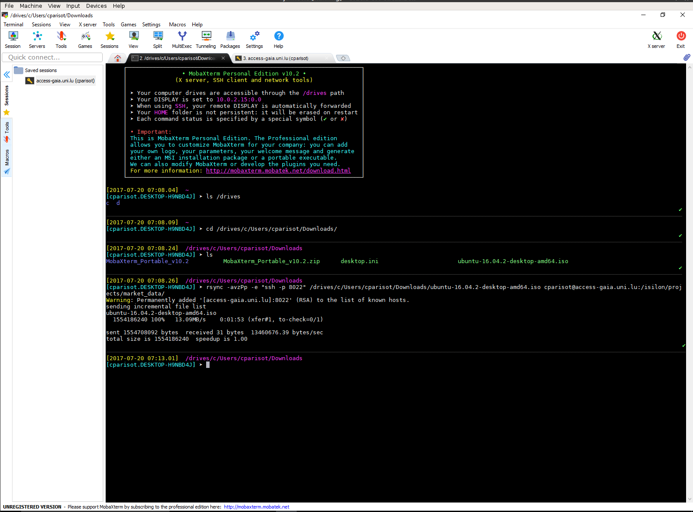

Data Transfer to/from/within UL HPC Clusters¶
Introduction¶
Directories such as $HOME, $WORK or $SCRATCH are shared among the nodes of the cluster that you are using (including the login node) via shared filesystems (SpectrumScale, Lustre) meaning that:
- every file/directory pushed or created on the login node is available on the computing nodes
- every file/directory pushed or created on the computing nodes is available on the login node
The two most common commands you can use for data transfers over SSH:
scp: for the full transfer of files and directories (only works fine for single files or directories of small/trivial size)rsync: a software application which synchronizes files and directories from one location to another while minimizing data transfer as only the outdated or inexistent elements are transferred (practically required for lengthy complex transfers, which are more likely to be interrupted in the middle).
scp or rsync?
While both ensure a secure transfer of the data within an encrypted tunnel, rsync should be preferred: as mentionned in the from openSSH 8.0 release notes:
"The scp protocol is outdated, inflexible and not readily fixed. We recommend the use of more modern protocols like sftp and rsync for file transfer instead".
scp is also relatively slow when compared to rsync as exhibited for instance in the below sample Distem experience:

You will find below notes on scp usage, but kindly prefer to use rsync.
Consider scp as deprecated! Click nevertheless to get usage details
scp (see scp(1) ) or secure copy is probably the easiest of all the methods. The basic syntax is as follows:
scp [-P 8022] [-Cr] source_path destination_path
- the
-Poption specifies the SSH port to use (in this case 8022) - the
-Coption activates the compression (actually, it passes the -C flag to ssh(1) to enable compression). - the
-roption states to recursively copy entire directories (in this case,scpfollows symbolic links encountered in the tree traversal). Please note that in this case, you must specify the source file as a directory for this to work.
The syntax for declaring a remote path is as follows on the cluster:
yourlogin@iris-cluster:path/from/homedir
Transfer from your local machine to the remote cluster login node
For instance, let's assume you have a local directory ~/devel/myproject you want to transfer to the cluster, in your remote homedir.
# /!\ ADAPT yourlogin to... your ULHPC login
$> scp -P 8022 -r ~/devel/myproject yourlogin@iris-cluster:
This will transfer recursively your local directory ~/devel/myproject on the cluster login node (in your homedir).
Note that if you configured (as advised elsewhere) the SSH connection in your ~/.ssh/config file, you can use a much simpler syntax:
$> scp -r ~/devel/myproject iris-cluster:
Transfer from the remote cluster front-end to your local machine
Conversely, let's assume you want to retrieve the files ~/experiments/parallel_run/*
$> scp -P 8022 yourlogin@iris-cluster:experiments/parallel_run/* /path/to/local/directory
Again, if you configured the SSH connection in your ~/.ssh/config file, you can use a simpler syntax:
$> scp iris-cluster:experiments/parallel_run/* /path/to/local/directory
See the scp(1) man page or man scp for more details.
Danger
scp SHOULD NOT be used in the following cases:
- When you are copying more than a few files, as scp spawns a new process for each file and can be quite slow and resource intensive when copying a large number of files.
- When using the
-rswitch, scp does not know about symbolic links and will blindly follow them, even if it has already made a copy of the file. That can lead to scp copying an infinite amount of data and can easily fill up your hard disk (or worse, a system shared disk), so be careful.
N.B. There are many alternative ways to transfer files in HPC platforms and you should check your options according to the problem at hand.
Windows and OS X users may wish to transfer files from their systems to the clusters' login nodes with easy-to-use GUI applications such as:
- WinSCP (Windows only)
- FileZilla Client (Windows, OS X)
- Cyberduck (Windows, OS X)
These applications will need to be configured to connect to the frontends with the same parameters as discussed on the SSH access page.
Using rsync¶
The clever alternative to scp is rsync, which has the advantage of transferring only the files which differ between the source and the destination. This feature is often referred to as fast incremental file transfer. Additionally, symbolic links can be preserved. The typical syntax of rsync (see rsync(1) ) for the cluster is similar to the one of scp:
# /!\ ADAPT </path/to/source> and </path/to/destination>
# From LOCAL directory (/path/to/local/source) toward REMOTE server <hostname>
rsync --rsh='ssh -p 8022' -avzu /path/to/local/source [user@]hostname:/path/to/destination
# Ex: from REMOTE server <hostname> to LOCAL directory
rsync --rsh='ssh -p 8022' -avzu [user@]hostname:/path/to/source /path/to/local/destination
- the
--rshoption specifies the connector to use (here SSH on port 8022) - the
-aoption corresponds to the "Archive" mode. Most likely you should always keep this on as it preserves file permissions and does not follow symlinks. - the
-voption enables the verbose mode - the
-zoption enable compression, this will compress each file as it gets sent over the pipe. This can greatly decrease time, depending on what sort of files you are copying. - the
-uoption (or--update) corresponds to an updating process which skips files that are newer on the receiver. At this level, you may prefer the more dangerous option--deletethat deletes extraneous files from dest dirs.
Just like scp, the syntax for qualifying a remote path is as follows on the cluster: yourlogin@iris-cluster:path/from/homedir
Transfer from your local machine to the remote cluster¶
Coming back to the previous examples, let's assume you have a local directory ~/devel/myproject you want to transfer to the cluster, in your remote homedir. In that case:
# /!\ ADAPT yourlogin to... your ULHPC login
$> rsync --rsh='ssh -p 8022' -avzu ~/devel/myproject yourlogin@access-iris.uni.lu:
~/devel/myproject on the cluster front-end (in your homedir).
Transfer to Iris, Aion or both?
The above example target the access server of Iris. Actually, you could have targetted the access server of Aion: it doesn't matter since the storage is SHARED between both clusters.
Note that if you configured (as advised above) your SSH connection in your ~/.ssh/config file with a dedicated SSH entry {iris,aion}-cluster, you can use a simpler syntax:
$> rsync -avzu ~/devel/myproject iris-cluster:
# OR (it doesn't matter)
$> rsync -avzu ~/devel/myproject aion-cluster:
Transfer from your local machine to a project directory on the remote cluster¶
When transferring data to a project directory you should keep the group and group permissions imposed by the project directory and quota. Therefore you need to add the options --no-p --no-g to your rsync command:
$> rsync -avP --no-p --no-g ~/devel/myproject iris-cluster:/work/projects/myproject/
Transfer from the remote cluster to your local machine¶
Conversely, let's assume you want to synchronize (retrieve) the remote files ~/experiments/parallel_run/* on your local machine:
# /!\ ADAPT yourlogin to... your ULHPC login
$> rsync --rsh='ssh -p 8022' -avzu yourlogin@access-iris.uni.lu:experiments/parallel_run /path/to/local/directory
Again, if you configured the SSH connection in your ~/.ssh/config file, you can use a simpler syntax:
$> rsync -avzu iris-cluster:experiments/parallel_run /path/to/local/directory
# OR (it doesn't matter)
$> rsync -avzu aion-cluster:experiments/parallel_run /path/to/local/directory
As always, see the man page or man rsync for more details.
Windows Subsystem for Linux (WSL)
In WSL, the home directory in Linux virtual machines is not your home directory in Windows. If you want to access the files that you downloaded with rsync inside a Linux virtual machine, please consult the WSL documentation and the file system section in particular.
Data Transfer within Project directories¶
The ULHPC facility features a Global Project directory $PROJECTHOME hosted within the GPFS/SpecrumScale file-system. You have to pay a particular attention when using rsync to transfer data within your project directory as depicted below.
Access rights to project directory: Quota for clusterusers group in project directories is 0 !!!
When a project <name> is created, a group of the same name (<name>) is also created and researchers allowed to collaborate on the project are made members of this group,which grant them access to the project directory.
Be aware that your default group as a user is clusterusers which has (on purpose) a quota in project directories set to 0. You thus need to ensure you always write data in your project directory using the <name> group (instead of yoru default one.). This can be achieved by ensuring the setgid bit is set on all folders in the project directories: chmod g+s [...]
When using rsync to transfer file toward the project directory /work/projects/<name> as destination, be aware that rsync will not use the correct permissions when copying files into your project directory. As indicated in the Data transfer section, you also need to:
- give new files the destination-default permissions with
--no-p(--no-perms), and - use the default group
<name>of the destination dir with--no-g(--no-group) - (eventually) instruct rsync to preserve whatever executable permissions existed on the source file and aren't masked at the destination using
--chmod=ug=rwX
Your full rsync command becomes (adapt accordingly):
rsync -avz {--update | --delete} --no-p --no-g [--chmod=ug=rwX] <source> /work/projects/<name>/[...]
For the same reason detailed above, in case you are using a build command or more generally any command meant to write data in your project directory /work/projects/<name>, you want to use the sg as follows:
# /!\ ADAPT <name> accordingly
sg <name> -c "<command> [...]"
This is particularly important if you are building dedicated software with Easybuild for members of the project - you typically want to do it as follows:
# /!\ ADAPT <name> accordingly
sg <name> -c "eb [...] -r --rebuild -D" # Dry-run - enforce using the '<name>' group
sg <name> -c "eb [...] -r --rebuild" # Dry-run - enforce using the '<name>' group
Debugging quota issues
Sometimes, when copying files with rsync or scp commands and you are not careful with the options of these commands, you copy files with incorrect permissions and ownership. If a directory is copied with the wrong permissions and ownership, all files created within the directory may maintain the incorrect permissions and ownership. Typical issues that you may encounter include:
- If a directory is copied incorrectly from a project directory to your home directory, the contents of the directory may continue counting towards the group data instead of your personal data and data usage may be misquoted by the
df-ulphcutility. Actual data usage takes into account the file group not only its location. - If a directory is copied incorrectly from a personal directory or another machine to a project directory, you may be unable to create files, since the
clusterusersgroup has no quota inside project directories. Note the group special permission (g±s) in directories ensures that all files created in the directory will have the group of the directory instead of the process that creates the file.
Typical resolutions techniques involve resetting the correct file ownership and permissions:
chown -R <username>:<project name> <path to directory or file>
find <path to directory or file> -type d | xargs -I % chmod g+s '%'
chown -R <username>:clusterusers <path to directory or file>
find <path to directory or file> -type d | xargs -I % chmod g-s '%'
Using MobaXterm (Windows)¶
If you are under Windows and you have MobaXterm installed and configured, you probably want to use it to transfer your files to the clusters. Here are the steps to use rsync inside MobaXterm in Windows.
Warning
Be aware that you SHOULD enable MobaXterm SSH Agent -- see SSH Agent instructions for more instructions.
Using a local bash, transfer your files¶
- Open a local "bash" shell. Click on Start local terminal on the welcome page of MobaXterm.
- Find the location of the files you want to transfer. They should be located under
/drives/<name of your disk>. You will have to use the Linux command line to move from one directory to the other. Thecdcommand is used to change the current directory andlsto list files. For example, if your files are underC:\\Users\janedoe\Downloads\you should then go to/drives/c/Users/janedoe/Downloads/with this command:
cd /drives/c/Users/janedoe/Downloads/
Then list the files with ls command. You should see the list of your data files.
- When you have retrieved the location of your files, we can begin the transfer with
rsync. For example/drives/c/Users/janedoe/Downloads/(watch out, there is no/character at the end of the path, it is important). - Launch the command
rsyncwith this parameters to transfer all the content of theDownloadsdirectory to the/isilon/projects/market_data/directory on the cluster (the syntax is very important, be careful)
rsync -avzpP -e "ssh -p 8022" /drives/c/Users/janedoe/Downloads/ yourlogin@access-iris.uni.lu:/isilon/projects/market_data/
- You should see the output of transfer in progress. Wait for it to finish (it can be very long).

Interrupt and resume a transfer in progress¶
- If you want to interrupt the transfer to resume it later, press
Ctrl-Cand exit MobaXterm. - To resume a transfer, go in the right location and execute the
rsynccommand again. Only the files that have not been transferred will be transferred again.
Alternative approaches¶
You can also consider alternative approaches to synchronize data with the cluster login node:
- rely on a versioning system such as Git; this approach works well for source code trees;
- mount your remote homedir by SSHFS:
- on Mac OS X, you should consider installing MacFusion for this purpose, where as
- on Linux, just use the command-line
sshfsor,mc;
- use GUI tools like FileZilla, Cyberduck, or WindSCP (or proprietary options like ExpanDrive or ForkLift 3).
SSHFS¶
SSHFS (SSH Filesystem) is a file system client that mounts directories located on a remote server onto a local directory over a normal ssh connection. Install the requires packages if they are not already available in your system.
# Debian-like
sudo apt-get install sshfs
# RHEL-like
sudo yum install sshfs
fuse group.
# Assuming HomeBrew -- see https://brew.sh
brew install osxfuse sshfs
With SSHFS any user can mount their ULHPC home directory onto a local workstation through an ssh connection. The CLI format is as follows:
sshfs [user@]host:[dir] mountpoint [options]
Proceed as follows (assuming you have a working SSH connection):
# Create a local directory for the mounting point, e.g. ~/ulhpc
mkdir -p ~/ulhpc
# Mount the remote file system
sshfs iris-cluster: ~/ulhpc -o follow_symlinks,reconnect,dir_cache=no
[dir] argument blanck, mounts the user's home directory by default. The options (-o) used are:
follow_symlinkspresents symbolic links in the remote files system as regular files in the local file system, useful when the symbolic link points outside the mounted directory;reconnectallows the SSHFS client to automatically reconnect to server if connection is interrupted;dir_cacheenables or disables the directory cache which holds the names of directory entries (can be slow for mounted remote directories with many files).
When you no longer need the mounted remote directory, you must unmount your remote file system:
fusermount -u ~/ulhpc
diskutil umount ~/ulhpc
Transfers between long term storage and the HPC facilities¶
The university provides central data storage services for all employees and students. The data are stored securely on the university campus and are managed by the IT department. The storage servers most commonly used at the university are
- Atlas (atlas.uni.lux) for staff members, and
- Poseidon (poseidon.uni.lux) for students.
For more details on the university central storage, you can have a look at
Connecting to central data storage services from a personal machine
The examples presented here are targeted to the university HPC machines. To connect to the university central data storage with a (Linux) personal machine from outside of the university network, you need to start first a VPN connection.
The SMB shares exported for directories in the central data storage are meant to be accessed interactively. Transfer your data manually before and after your jobs are run. You can mount directories from the central data storage in the login nodes, and access the central data storage through the interface of smbclient from both the compute nodes during interactive jobs and the login nodes.
Never store your password in plain text
Unlike mounting with sshfs, you will always need to enter your password to access a directory in an SMB share. Avoid, storing your password in any manner that it makes it recoverable from plain text. For instance, do not create job scripts that contain your password in plain text just to move data to Atlas within a job.
The following commands target Atlas, but commands for Poseidon are similar.
Mounting an SMB share to a login node¶
The UL HPC team provides the smb-storage script to mount SMB shares in login nodes.
- There exists an SMB share
userswhere all staff member have a directory named after their user name (name.surname). To mount your directory in an shell session at a login node execute the commandand your directory will be mounted to the default mount location:smb-storage mount name.surname~/atlas.uni.lux-users-name.surname - To mount a project share
project_namein a shell session at a login node execute the commandand the share will be mounted in the default mount location:smb-storage mount name.surname --project project_name~/atlas.uni.lux-project_name - To unmount any share, simply call the
unmountsubcommand with the mount point path, for instanceor:smb-storage unmount ~/atlas.uni.lux-users-name.surnamesmb-storage unmount ~/atlas.uni.lux-project_name
The smb-storage script provides optional flags to modify the default options:
--helpprints information about the usage and options of he script;--server <server url>specifies the server from which the SMB share is mounted (defaults to--server atlas.uni.luxif not specified, use--server poseidon.uni.luxto mount a share from Poseidon);--project <project name> [<directory in project>]mounts the share<project name>and creates a symbolic link to the optionally provided location<directory in project>, or to the project root directory if a location is not provided (defaults to--project users name.surnameif not specified);--mountpoint <path>selects the path where the share directory will be available (defaults to~/<server url>-<project name>-<directory in project>if nbot specified);--debugprints details of the operations performed by the mount script.
Best practices
Mounted SMB shares will be available in the login node, and he mount point will appear as a dead symbolic link in compute nodes. This is be design, you can only mount SMB shares in login nodes because SMB shares are meant to be used in interactive sections.
Mounted shares will remain available as long as the login session where the share was mounted remains active. You can mount shares in a tmux session in a login node, and access the share from any other session in the login node.
Details of the mounting process
There exists an SMB share users where all staff member have a directory named after their user name (name.surname). All other projects have an SMB share named after the project name (in lowercase characters).
The smb-storage scripts uses gio mount to mount SMB shares. Shares are mounted in a specially named mount point in /run/user/${UID}/gvfs. Then, smb-storage creates a symbolic link to the requested directory in project in the path specified in the --mountpoint option.
During unmounting, the symbolic links are deleted by the smb-storage script and then the shares mounted in /run/user/${UID}/gvfs are unmounted and their mount points are removed using gio mount --unmount. If a session with mounted SMB shares terminates without unmounting the shares, the shares in /run/user/${UID}/gvfs will be unmounted and their mount points deleted, but the symbolic links created by smb-storage must be removed manually.
Accessing SMB shares with smbclient¶
The smbclient program is available in both login and compute nodes. In compute nodes the only way to access SMB shares is through the client program. With the SMB client one can connect to the users share and browse their personal directory with the command:
smbclient //atlas.uni.lux/users --directory='name.surname' --user=name.surname@uni.lu
smbclient //atlas.uni.lux/project_name --user=name.surname@uni.lu
Type help to get a list of all available commands or help (command_name) to get more information for a specific command. Some useful commands are
lsto list all the files in a directory,mkdir (directory_name)to create a directory,rm (file_name)to remove a file,rmdir (directory_name)to remove a directory,scopy (source_full_path) (destination_full_path)to move a file within the SMN shared directory,get (file_name) [destination]to move a file from Atlas to the local machine (placed in the working directory, if the destination is not specified), andput (file_name) [destination]to move a file to Atlas from the local machine (placed in the working directory, if a full path is not specified),mget (file name pattern) [destination]to download multiple files, andmput (file name pattern) [destination]to upload multiple files.
The patterns used in mget/mput are either normal file names, or globular expressions (e.g. *.txt).
Connecting into an interactive SMB session means that you will have to maintain a shell session dedicated to SMB. However, it saves you from entering your password for every operation. If you would like to perform a single operation and exit, you can avoid maintaining an interactive session with the --command flag. For instance,
smbclient //atlas.uni.lux/users --directory='name.surname' --user=name.surname@uni.lu --command='get "full path/to/remote file.txt" "full path/to/local file.txt"'
smbclient //atlas.uni.lux/users --directory='name.surname' --user=name.surname@uni.lu --command='put "full path/to/local file.txt" "full path/to/remote file.txt"'
Moving whole directories is a bit more involved, as it requires setting some state variables for the session, both for interactive and non-interactive sessions. To download a directory for instance, use
smbclient //atlas.uni.lux/users --directory='name.surname' --user=name.surname@uni.lu --command='recurse ON; prompt OFF; mget "full path/to/remote directory" "full path/to/local directory"'
smbclient //atlas.uni.lux/users --directory='name.surname' --user=name.surname@uni.lu --command='recurse ON; prompt OFF; mput "full path/to/remote local" "full path/to/remote directory"'
recurse ONenables recursion into directories, and the optionprompt OFFdisables prompting for confirmation before moving each file.
Sources
Special transfers¶
Sometimes you may have the case that a lot of files need to go from point A to B over a Wide Area Network (eg. across the Atlantic). Since packet latency and other factors on the network will naturally slow down the transfers, you need to find workarounds, typically with either rsync or tar.